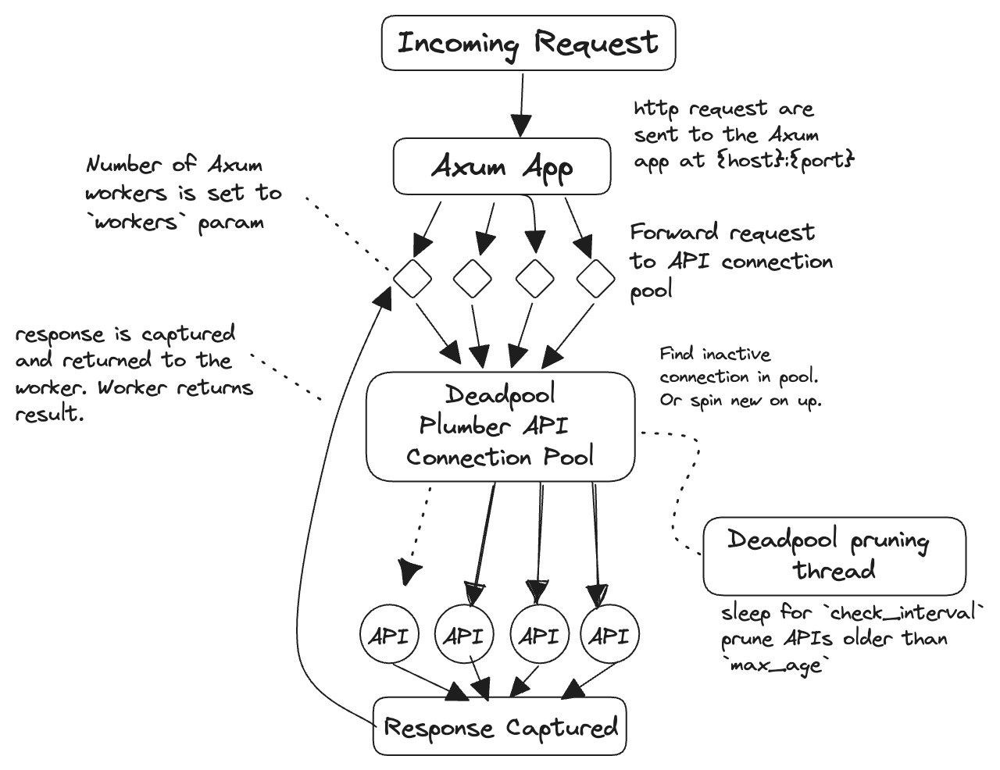

Redirects your plumbing for you.
valve creates multi-threaded Plumber APIs powered by Rust’s tokio and axum web frameworks. Plumber connections are automatically spawned, pooled, and terminated using deadpool. App connections are automatically pooled by hyper.
Valve is a Rust CLI with an accompanying R package. Running Valve from an R session will block the session. If you are comfortable, it is recommended to install the cli so you can run Valve from your terminal so that you can call the plumber APIs from your R session.
Motivation
Plumber is an R package that creates RESTful APIs from R functions. It is limited in that each API is a single R process and thus a single thread. Multiple queries are executed in the sequence that they came in. Scaling plumber APIs is not easy. The intention of valve is to be able to make scaling plumber APIs, and thus R itself, easier. We can make R better by leveraging Rust’s “fearless concurrency.”
Installation
R package instructions
There is an R package to simplify the use of Valve for those who are not familiar with Rust or CLI tools. It is available as a binary for Windows, Linux, and MacOSX thanks to R-universe.
install.packages("valve", repos = c("https://josiahparry.r-universe.dev", "https://cloud.r-project.org"))When the R package is built it also includes the binary executable at inst/valve. So if you ever find yourself needing the executable system.file("valve", package = "valve") will point you right to it! This will always be the version of the executable that your R package is using.
You can verify the binary works for your machine by running the below. If you have a Windows machine include system.file("valve.exe", package = "valve") for the executable.
# get executable path and included api paths
valve_executable <- system.file("valve", package = "valve")
plumber_api_path <- system.file("plumber.R", package = "valve")
# check that they exist
file.exists(c(valve_executable, plumber_api_path))
# run Valve from the R-package's executable
processx::run(
valve_executable,
args = c("-f", plumber_api_path),
echo = TRUE
)Creating a Valve app
To run a plumber API concurrently using the R package, use valve_run(). The most important argument is filepath which determines which Plumber API will be executed as well as specifying the host and port to determine where your app will run. Additional configuration can be done with the n_max, workers, check_unused, and max_age argument to specify how your app will scale. By default, the app will be run on host 127.0.0.1 and on port 3000.
library(valve)
# get included plumber API path
plumber_api_path <- system.file("plumber.R", package = "valve")
valve_run(plumber_api_path, n_max = 5)
#> Docs hosted at <http://127.0.0.1:3000/__docs__/>Using the cli:
valve -f plumber.R -n 5 Understanding the parameters:
The arguments that you provide determines how Valve will scale up and down the application is requests come in.
-
host(--host):- defaults to
127.0.0.1. Defines which host the Axum app and the plumber API will be hosted on.
- defaults to
-
port(--port):- defaults to
3000. Defines which port the main Axum app will be listening on.
- defaults to
-
file(--file):- defaults to
plumber.R. The path to the R script that defines the plumber API.
- defaults to
-
workers(--workers):- default
3. Determines how many workers are set in the TokioRuntime. These workers handle incoming requests and return responses.
- default
-
n_max(--n-max):- default
3. Refers to the maximum number of background Plumber APIs that can be spawned whereasworkersspecifies how many main worker threads are available to handle incoming requests. Generally, the number ofworkersshould be equal to the number of plumber APIs since because plumber is single threaded. This is the default. Ifworkersis less thann_max, you’ll never spawn the maximum number of APIs.
- default
-
check_unused(--check-unused):- default
10. The time interval, in seconds, to check for unused connections.
- default
-
max_age(--max-age):- default
300(five minutes). Specifies how long a connection can go unused without being terminated. If a connection reaches this age it will be terminated in the next pool check (interval determined by check_unused),
- default
Example: Calling valve with multiple workers
The way valve works is by accepting requests on a main port (3000 by default) and then distributing the requests round robin to the plumber APIs that are spawned on random ports. Requests are captured by axum and proxied to a plumber API process.
You can run the example plumber API included with Valve in the background in R using this code chunk:
# create temp file
tmp <- tempfile(fileext = ".R")
# create script lines
valve_script <- '
plumber_api_path <- system.file("plumber.R", package = "valve")
valve::valve_run(plumber_api_path, workers = 5)
'
# write to temp
writeLines(valve_script, tmp)
# run in the background
rstudioapi::jobRunScript(tmp)Or launch it directly from the terminal via:
valve -f $(Rscript -e 'cat(system.file("plumber.R", package = "valve"))')Once the Valve app is running in the background we can begin the example. First I’m going to define a function to call the /sleep endpoint. The function will take two parameters: the port and the duration of sleep. The port will be used to change between the valve app and a single plumber API.
sleep <- function(port, secs) {
httr2::request(
paste0("127.0.0.1:", port, "/sleep?zzz=", secs)
) |>
httr2::req_perform() |>
httr2::resp_body_string()
}Using this function we’ll create 5 total R sessions each will make a request to sleep for 2 seconds.
First, we’ll ping the main valve app which will distribute requests. The first time this is ran might be slow since there will not be any plumber APIs in the pool yet.
start <- Sys.time()
multi_sleep <- future_map(1:5, ~ sleep(3000, 2))
multi_total <- Sys.time() - startNext, we select only one of the available plumber APIs and query it.
start <- Sys.time()
single_sleep <- furrr::future_map(1:5, ~ sleep(53869, 2))
single_total <- Sys.time() - startNotice the performance difference.
print(paste0("Multiple Plumber APIs: ", round(multi_total, 2)))
#> [1] "Multiple Plumber APIs: 2.63"
print(paste0("One Plumber API: ", round(single_total, 2)))
#> [1] "One Plumber API: 10.08"In the former each worker gets to make the request in approximately the same amount of time. The latter has to wait for each subsequent step to finish before the next one can occur. So we’ve effectively distributed the work load.
How Valve Works
The architecture, at a high level, is captured by this diagram.

There are really three key components to this:
- the Tokio
Runtime, - the Axum
Router, - and the connection
Pool.
Request handling
The tokio Runtime is what allows Valve to be asynchronous. It handles I/O, tasks, and all that jazz. It is also what backs Axum. In Valve, we define an asynchronous runtime with a pre-defined number of workers. These workers are what handle the incoming requests.
When a request is picked up, it is then sent to the Axum Router. The router takes the incoming requests and sends them to the appropriate endpoint.
The routes that are defined are / and /*key. / is a permanent redirect to the plumber API documentation. Whereas /*key captures every other request. These requests have a special handler that, in short, act as a reverse proxy between Axum and a plumber API. The handler captures the request and grabs a Plumber connection from the Pool. The Plumber struct contains the host and port that the APIs live on. The request is then parsed, and redirected to the plumber API. The response is captured and returned as a response to the Axum router.
Connection pooling
Valve implements a custom managed Pool for plumber APIs. The pool consists of Plumber struct which contain the host, port, and the child process.
When Deadpool spawns a new connection for the pool, it thus spawns a new plumber API. This is done using Command::new() to create a detached child process. A random port is generated, checked, and then assigned to the plumber API. Then the process is started by calling R -e "plumber::plumb('{filepath}')$run(host = '{host}', port = {port})" via Command. This means that R must be on the path and that if there are multiple installs of R, whichever one is on the path will be used.
To prevent plumber APIs being spawned too frequently they are kept alive for duration defined by max_age. A connection can be unused for that duration. If it exceeds that age without being used, Deadpool will prune the connection and terminate the process. This check happens on a separate thread occurring every check_unused seconds.
Benchmarks with drill
Simple benchmarks using drill can be found in inst/bench-sleep-plumber.yml and bench-sleep-valve.yml.
The bench mark calls the /sleep endpoint and sleeps for 500ms for 100 times with 5 concurrent threads. This alone can illustrate how much we can speed up a single plumber API’s response time with valve.
Plumber’s benchmark:
Time taken for tests 50.7 seconds
Total requests 100
Successful requests 100
Failed requests 0
Requests per second 1.97 [#/sec]
Median time per request 2540ms
Average time per request 2482ms
Sample standard deviation 272ms
99.0'th percentile 2556ms
99.5'th percentile 2556ms
99.9'th percentile 2556msValve’s benchmark:
Time taken for tests 10.2 seconds
Total requests 100
Successful requests 100
Failed requests 0
Requests per second 9.78 [#/sec]
Median time per request 510ms
Average time per request 510ms
Sample standard deviation 2ms
99.0'th percentile 516ms
99.5'th percentile 518ms
99.9'th percentile 518msWith all that said….
valve is best suited for light to medium sized work loads. Each background plumber API will hold their own copy of their R objects. So if you are serving a machine learning model that is a GB big, that model will have to be copied into each thread and that can be quickly bloat up your ram. So be smart! If you have massive objects in your R session, try and reduce the clutter and thin it out.